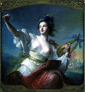

| Home | Greeting | Great land stories | Grot of poetry | Graphic album | Grandiose gadgets | Groan of the mind | Back | Next |
Страница 7.
Родителям...
Маме
(Песня)
В ночной ли тишине,
В глубоком, сладком сне
Беззвучно прошепчу: Мама...
Коль счастия рубеж,
На пике всех надежд,
Ликуя, прокричу: Мама!
Судьба ль на волоске,
В печали и тоске,
Стучится дробь в виске: Мама!
Когда совсем одна,
Без неба и без дна,
Лишь ты одна нужна, Мама!
Мама, мама моя,
Мама сказочная...
Мама, мама моя,
Мама сказочная моя.
Я знаю, ты придешь.
Всегда меня поймешь.
Ты песню мне споешь, Мама.
Прижмешь меня к себе ль,
Уложишь в колыбель...
Твой голос, как свирель, Мама.
И будешь ты всегда
Все так же молода.
О ты моя звезда, Мама.
...Сиянье глаз родных
И нежность рук твоих...
Я лобызаю их, Мама...
Мама, мама моя,
Мама сказочная...
Мама, мама моя,
Мама сказочная моя.
2001г., август

Папе
Родился он под свистом пуль
В казачьей стороне.
Под небом проносился гул. -
Война по всей стране.
Он выжил. Молодая мать
Укрыла на груди.
Как колыбельную спивать,
Когда земля гудит?
Спивала. И младенец спал.
И видел мир во сне.
На радость людям подрастал,
Назло - слепой войне.
И славным мальчуганом стал.
Как мама, нежен был.
А от отца в наследство взял
Казачий страстный пыл.
Моднячий чуб наискосок.
Лихой моряцкий стиль.
Мечтам предаться б на часок,
Пока "на море" штиль.
А то, глядишь, уже пора.
Наш Витька-молодец
В хозяйстве парень - на ура!
И в меру... сорванец.
И хлопцев дружною толпой
Всегда он окружен.
- Сыграй, Витек, сыграй да спой.
Возьми аккордеон.
Талант сей даден свысока.
Господь его хранит.
Всяк инструмент в его руках
Божественно звучит.
...Но время мчится, как стрела,
И остановок нет.
И вот малюточка-сестра
Явилася на свет.
Он Валентину обожал,
Заботливый наш брат.
Он повзрослел и возмужал
И все был сделать рад
Во благо дома и семьи.
Случилось так: судьба
Забросила семью в Сибирь,..
И началась борьба.
Оставшись без отца, теперь
Наш Виктор, что оплот.
Чтоб вновь открыть для жизни дверь,
Пошел он на завод.
Трудился честно, все дела
На совесть выполнял.
Златые руки! Голова!..
Так мастером он стал.
Но несмотря на суету,
Рутину будних дней,
Хранил он музыки звезду,
Звезду души своей.
И пламенным огнем рвалась
Она из заперти.
И наконец-то прижилась
В оркестре, где пути
Встречаются мятежных душ
Порою навсегда.
И вот у Вити в сердце уж
Еще одна звезда.
Ее гитары мягкий звук
Ласкает Витин слух.
От вида белых, нежных рук
Захватывает дух.
И мандалиною в ответ
Он эхом вторит ей.
И синих глаз лучистый свет
Горит еще сильней.
И сердце бедное любовь
Своим огнем палит.
Украинско-казачья кровь
Неистово кипит.
Тамарою звалась она.
Прекрасна, как весна!
Словно гитарная струна,
ВысОка и стройна.
Попала в сети ты его,
Как ночь, густых бровей.
Заворожилась синевой
Больших очей-морей.
И вот из загса он ведет
Красавицу-жену.
И "Горько!" им кричит народ.
И все вокруг в пьяну.
И бушевали страсти в ночь,
Круша остов Земли.
А через год... родится дочь -
Зайчонок Натали.
Чуть погодя - еще одна
Дочурка. Ольгой звать.
Наш Виктор и его жена -
Теперь отец и мать.
И дружно все они живут,
Закатывают пир.
Друзей своих к себе зовут.
Веселье - на весь мир!
В семье у них покой, уют.
И музыка всегда.
Теперь уж вчетвером поют
И... пляшут иногда.
Закончил Виктор институт
И выше рангом стал.
Коллеги уважают, чтут.
Он - профессионал!
А на досуге, в отпусках
Стремится к бережку.
Сидит он с удочкой в руках.
На огоньке уху
Затем он сварит. Батальон
Накормит женский свой.
И, как ребенок, счастлив он
С природой быть родной.
Походы по грибы в лесок.
Да за реку к скале.
Шашлык под водку, костерок,
Картошечка в золе.
Хотя и дальние края
Не прочь он повидать.
И дружно едет вся семья
Просторы покорять.
Девчонок он боготворит.
Готов он жизнь отдать
За них. Как сам он говорит,
Не может отказать
Ни в чем он им. Готов купить,
Чего лишь захотят.
Как нужно денег попросить,
Так к папочке летят.
Уедет мама в Ленинград,
Как Натке в детский сад
Приспичит приодеть наряд
Оранжевый, до пят.
Морожное! По пол-кило
На душу - разом съесть!
Да, маме будет тяжело
Принять такую весть.
Цепочки, фенички, фигня
И всякий разный бред.
- Зачем вы просите меня?
Сказала ж мама: Нет.
И сколько раз он угрожал
Отбуцкать их ремнем.
Но никогда не обижал,
Хоть и ремень при нем.
И так же искренне отца
Они боготворят.
И благодарны без конца!
И любят, и... звонят.
Тамарочку, свою жену,
Как око, бережет.
Через года ее одну
Он на руках несет.
Поразлетелись из гнезда
Дочурки. Им уж лет,
Как было и ему, когда
Любви познал он свет.
И время повернулось вспять.
Все словно, как вчера.
И вот они вдвоем опять
Проводят вечера.
Все так же молоды оне
И так же все поют.
И знают, что на стороне
Всегда их дочки ждут.
Пусть серебриста голова, -
Цвет не меняет кровь.
И что там не гласит молва, -
_Есть_ вечная Любовь!
2002г., январь
| Top | Home | Greeting | Great land stories | Grot of poetry | Graphic album | Grandiose gadgets | Groan of the mind | Back | Next |